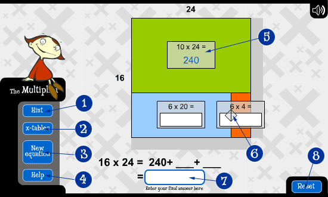

|
The Multiplier | Answering Maddy's multiplications | Creating your multiplication | Using The Multiplier | Control instructions |
Using The Multiplier
The Multiplier is a tool that you can use to break up numbers. Some numbers seem too big to multiply easily. Breaking them up into smaller calculations can help.

- This slider moves up and down to break up the number on the left of The Multiplier.
- This slider moves left and right to break up the number at the top of The Multiplier.
- This slider will round up the number at the top of The Multiplier to the nearest 10.
- This slider will round up the number to the left of The Multiplier to the nearest 10.
You can answer equations as they appear by entering the correct number in each answer box.

- Selecting Hint will display some strategies to help you work out the answer.
- Selecting x-tables will display a table with basic multiplication facts.
- Selecting New equation will take you right back to the beginning where you can start all over with a different multiplication.
- Selecting Help will display a help screen with instructions on how to use The Multiplier.
- Once the correct answer has been entered, this part of The Multiplier locks. You will need to reset The Multiplier to start working on your multiplication again.
- In this example, this part of The Multiplier can still be moved to break up the number 24.
- This is the answer box for the multiplication you are solving. You can enter the answer at any time.
- Selecting Reset will reset The Multiplier. Only choose it if you want to start working on your multiplication again.